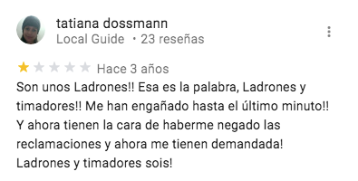

Extra
A Castelldent Clínica Dental y en particular sus propietarios, Tatiana Dossmann Casallas y Rubén Darío López Cruz, no les ha resultado agradable una reseña pública en Google Maps Review cuestionando alguna de sus decisiones, tal como se expone de forma amplia en las secciones 'Google' y 'Facebook' de este sitio web.
A pesar de ello Tatiana Dossmann ha hecho exactamente eso mismo tantas veces como lo ha considerado justificado desde su punto de vista. En al menos cinco ocasiones ha utilizado Google Maps Reviews para otorgar las puntuaciones más bajas posibles a otros tantos negocios u organismos institucionales según el caso.
De igual forma, tanto Tatiana Dossmann como Rubén Darío López Cruz han publicado en otras ocasiones reseñas con la máxima puntuación a clínicas dentales de otros municipios en un acto recíproco, de tal forma que Castelldent Clínica Dental también ha sido objeto de las más altas calificaciones por parte de estas clínicas, entre las cuales parece ser que tienen algún tipo de colaboración, entre otros posiblemente porque al estar en municipios diferentes no se hacen la competencia entre sí.
Tatiana Dossmann Casallas

01
Transcripción Opinión
Son unos Ladrones!! Esa es la palabra, Ladrones y timadores!! Me han engañado hasta el último minuto!! Y ahora tienen la cara de haberme negado las reclamaciones y ahora me tienen demandada! Ladrones y timadores sois!
Observaciones
Señalar que el negocio al cual califica de 'ladrones' y 'timadores' está situado en la Avda. Primero de Mayo 10, en Castelldefels, ubicándose Castelldent Clínica Dental en el número 12 de la misma calle, es decir, están prácticamente pared con pared, tal como se comprueba en esta imagen de Google Maps.


02
Transcripción Opinión
Que horror ver cómo llegan los pacientes con la boca destruida con los tratamientos de este lugar!!
Observaciones
Esta reseña acerca de una empresa de la competencia está expresamente prohibida por la Política de Contenido de Google Maps (consultar al final de la lista 'Conflicto de intereses')
03
Transcripción Opinión
Lo que me vendieron no es nada parecido a lo que estoy recibiendo. Una landing page que no da ningún posicionamiento en la web. En la venta me prometieron que la pagina estaría en los primeros lugares de los motores de búsqueda y no ha sido así. llevo mas de 6 meses con la landing page y lo único que veo es que el posicionamiento va para las paginas 6 y 7 de google. El peor contrato que he podido firmar en toda mi vida y lo peor es que no se puede cancelar porque la clausula leonina que trae de obligatoriedad de dos años es un robo a mano armada y lo único que te dicen para reparar o para intentar posicionar mas es INVERTIR MAS DINERO DEL QUE YA SE INVIERTE MENSUAL EN GOOGLE ADWORD!!! que chorrada y que mentirosos sois. El error es no leer el contrato porque en el contrato te ponen todo lo contrario a lo que la vendedora te ha dicho!!
Respuesta del Propietario
Muchas gracias por tu valoración Tatiana, entendemos que puedas estar molesta, pero como bien explican nuestros asesores de marketing digital, una landing page es una página optimizada para trabajar con las campañas de Google Adwords. El objetivo principal de nuestro trabajo, es llevar tráfico a la landing page y, posteriormente, a tu negocio.
La opción básica que has contratado incluye un presupuesto mínimo de 35 € con los que ya comienzas a tener resultados.
Como has podido comprobar desde que empezaste a trabajar con nosotros en junio de 2016, has recibido 29 llamadas y 7 formularios de personas interesadas en tus servicios; teniendo en cuenta el ROI y la competencia de tu sector, estos resultados son óptimos, más aún teniendo en cuenta que Google impone un coste por clic medio de 2,14 € para este sector; esta puja la establece Google y es completamente ajena a nosotros.
Por otro lado, la evolución del SEO o posicionamiento natural es un proceso lento, es por ello que lo complementamos con las campañas de Google Adwords para alcanzar nuestro objetivo de llevar tráfico a tu landing page.
Recuerda que estamos aquí para ayudarte.
Observaciones
En este opinión de nuevo Tatiana Dossmann recurre a la descalificación (¿incluso insulto?) llamando 'mentirosos' a la empresa en cuestión. Asegura haber firmado el 'peor contrato de mi vida', aunque la primera de las reseñas referida a la empresa de seguros, publicada en las mismas fechas, parece ser que también compite por ese laurel ('ladrones' y 'timadores' son los términos que utiliza en esa reseña).
04
Transcripción Opinión
Muy mala experiencia. He preguntado a cuantos minutos está el Lugar de la estación de esquí Masella, me informaron que solo a 20 minutos y es mentira!! Están a 50 minutos y pasando el túnel del cadi ósea que hay que pagar peaje cada vez que vas a masella!! La persona que nos atendió en al noche del 11 de marzo fue muy amable y por eso decidimos quedarnos sabiendo que ya nos habían mentido acerca de la ubicación. En la mañana, y de acuerdo al letrero que hay en la habitación (de 24 a 7am no hacer ruido) llame al teléfono que figura en en Google como tel de contacto y me contesto una señora extremadamente grosera diciéndome que las 7:05 no eran horas de llama y me gritó y colgó el teléfono. Cuando he ido a La RECEPCION me han dicho que ese número es de una casa y que quizás los despertamos!! Si tienen un negocio lo mínimo que deben hacer es atenderlo!! El lugar súper sucio! Polvo por todos lados, los utensilios de cocina partidos, la puerta de la habitación principal no cierra y para finalizar NO HAY AGUA CALIENTE!!! El calentador no funciona y por más q intentamos encenderlo no fue posible!! Muy mal servicio!! No lo recomiendo nunca!!
Observaciones
Sin entrar en los particulares de su aparente desastrosa experiencia, de nuevo recurre a descalificaciones, en esta ocasión de nuevo insiste en el calificativo de 'mentirosos'.

05
Transcripción Opinión
He llegado a la dirección indicada y hay un letrero en la puerta con otra dirección!! Porque no cambiar los datos de Internet que no valen nada!!! Informar no vale nada!! La nueva dirección que tienen pues ya ESTÁ MAL. que mala información
Observaciones
La nueva dirección finalmente se actualizó en Google Maps, sucede que lleva un tiempo por cuanto hay que seguir un procedimiento de verificación, en algunos casos un tanto aparatoso dado que se ha de realizar mediante tarjeta postal. Dado que ella gestiona un negocio que también esta registrado en Google Maps, todo esto se entiende que ya lo sabe.
06
Transcripción Opinión
La doctora Ángela es la mejor en ortodoncia. Para mi hija ha sido una experiencia genial. Gracias.
Observaciones
La doctora de la que habla aparece también en el sitio web de Castelldent Clínica Dental, por lo tanto de nuevo Tatiana Dossmann incurre en una violación de la Política de Contenido de Google Maps, otra vez en lo referido a 'Conflicto de intereses'.
Rubén Dario López Cruz
01
Transcripción Opinión
Tardé mucho tiempo en decidir si realizar o no, mi tratamiento de ortodoncia, pero con la nueva técnica de alineadores ha sido una experiencia grata, gracias a la Dra Medina pues sus explicaciones lograron que me decidiera y estoy encantado
Observaciones
En este caso es Rubén Dario López Cruz quien incurre exactamente en la misma violación de la Política de Contenido de Google Maps, obviamente también en lo referido a 'Conflicto de intereses' y también aquí referido al mismo negocio que en la reseña anterior de Tatiana Dossmann (número 06).
Este sitio web no tiene Copyright. Todo el contenido es Dominio Público.